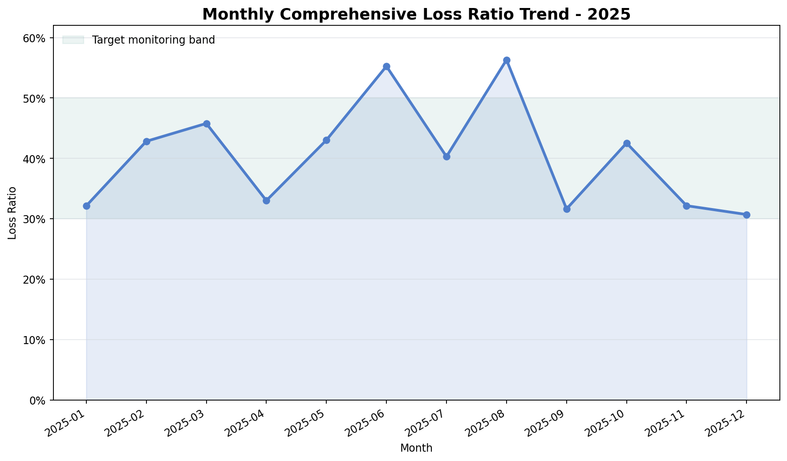
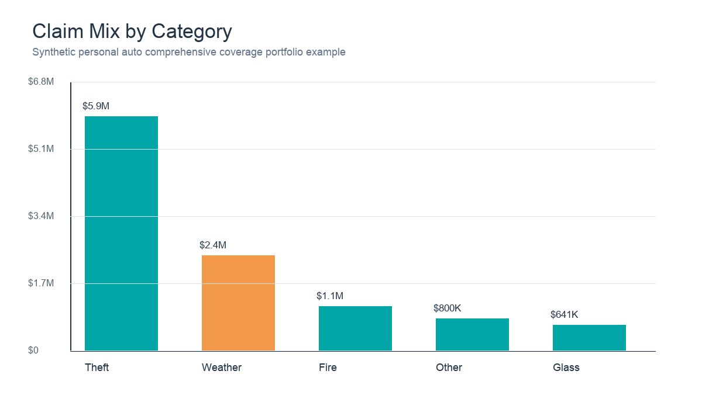
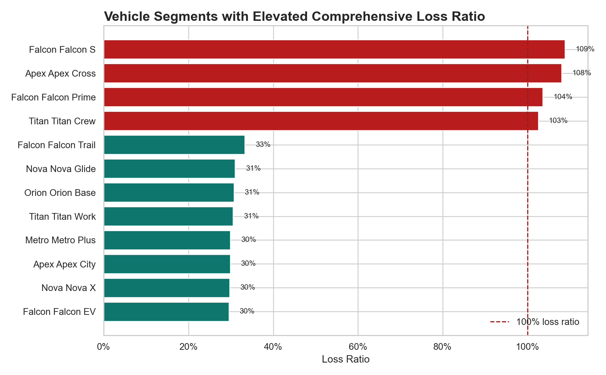
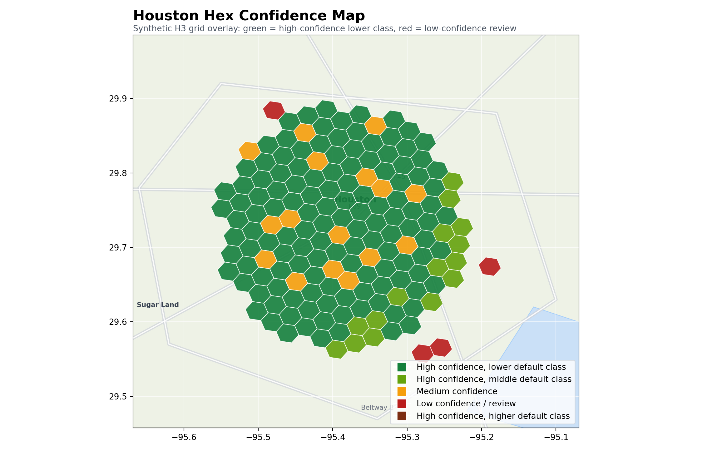

Product Analyst II · Personal insurance analytics
Builds SQL/Python monitoring workflows, product impact analyses, risk segmentation tools, and decision-support dashboards for pricing, guideline, and performance monitoring.
I am an analytics professional focused on insurance product analytics, monitoring dashboards, predictive modeling, and business-facing decision support. I like work that sits close to the question: what changed, why did it change, and what should the business do next?
Background
Builds SQL/Python monitoring workflows, product impact analyses, risk segmentation tools, and decision-support dashboards for pricing, guideline, and performance monitoring.
Coursework included product management, customer analytics, competitive analytics, prescriptive models, and data analytics.
Bachelor of Arts with a Computer Science minor, combining quantitative modeling, economics, and programming fundamentals.
Projects
Featured analytics project
A complete Streamlit analytics application for monitoring comprehensive coverage performance across premium, claims, loss categories, geography, vehicle segments, sales channel, business type, catastrophe indicator, and monthly period.
Defines reusable metrics for loss ratio, claim frequency, severity, earned premium, on-level premium, and claim mix with synthetic credibility controls.
Ranks vehicle make/model, geography, channel, and business type to separate normal performance movement from concentrated adverse segments.
Converts dashboard outputs into concise stakeholder insights about theft mix, vehicle concentration, catastrophe effects, and monitoring priorities.



Applied machine learning project
A synthetic geospatial machine learning workflow that assigns location-tagged records to H3 hex grids, engineers neighborhood-based spatial features, trains a random forest classifier, and gates recommendations by prediction confidence for stakeholder review.

Capabilities
SQL data extraction, Python data manipulation, reusable metric layers, validation checks.
Metric design, segmentation, cohort-style comparisons, performance monitoring, stakeholder narratives.
Predictive modeling, risk segmentation, gradient boosting workflows, model validation, business framing.
Loss ratio monitoring, claim frequency, severity analysis, catastrophe-aware views, credibility filters.
Streamlit apps, Plotly charts, dashboard UX, parameterized workflows, GitHub portfolio packaging.
Contact
I am interested in analytics roles where business judgment, careful metrics, and clear communication matter.